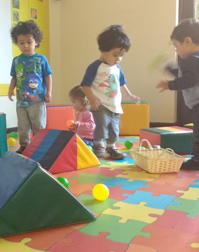
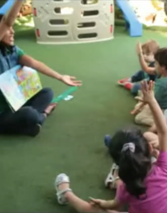

Trabajamos desde 1996 comprometidos con la educación inicial
Calefacción Central
Cámaras Web
Estimulación Temprana
Biblioteca Infantil
Alimentación Completa
Atendemos niños y niñas desde los 3 meses hasta los 4 años de edad.
Implementamos un proyecto educativo actualizado que responde a las necesidades e intereses de los niños.
Nuestro equipo está formado por educadoras profesionales y técnicos comprometidas con su trabajo. Además, cumplen con altos estándares pedagógicos y disciplinares.
Tenemos una infraestructura especialmente diseñada para Jardín Infantil y Salas Cunas.
NUESTRA MISIÓN
"En un ambiente seguro, proporcionar estimulación y cuidados a niños y niñas menores de 4 años, privilegiando una Formación de vanguardia que contribuya a integrarlos a un mundo en evolución"
NUESTRO SELLO
Acercar a los niños al placer de la lectura
"Buscamos desarrollar el goce por la literatura, en los niños, niñas y sus familias transmitiendo el valor de su importancia para la vida y disfrutando con cada actividad o con cada texto escrito"
Contamos con una biblioteca infantil, que incluye literatura y diferentes textos escritos.
Tenemos un proyecto educativo que sustenta nuestro quehacer.
Los niños participan de actividades diarias, tales como: lectura silenciosa, préstamo de cuentos a la casa, los distintivos de los niños son carátulas de cuentos, entre otros.

Horarios
Atendemos niños y niñas desde las 7:30 a las 18:30 hrs.
Incluye:
Colación a media mañana, almuerzo, once y colación de la tarde.
También hay otras jornadas, de acuerdo a las necesidades de las familias:
Conversemos otras opciones.
Además atendemos año continuado

Contacto
Nombre:
Correo Electrónico:
Teléfono:
Mensaje:
Alberto Valenzuela Llanos 2705 227589500 Whatsapp +56962856227
Propuesta Educativa
TRABAJAMOS CON UN MODELO PEDAGOGICO QUE NOS PERMITE:
Entregar a los niños y niñas las herramientas necesarias para desarrollar su autonomía.
Lograr que obtengan aprendizajes significativos siendo protagonistas de sus aprendizajes a través de actividades concretas.
Crear lazos afectivos tanto con sus pares y con adultos, sintiéndose considerado, seguro y respetado.
Otorgamos oportunidades de estimulación temprana a niños y niñas que están en salas cunas.
PROYECTOS
Para llevar a cabo nuestro trabajo día a día nos organizamos a través de proyectos, algunos de estos son:
Proyecto de Autoestima
Proyecto de Solidario
Proyecto de Medio Ambiente
Proyecto de Arte
Semana de la Familia
Semana de la Amistad
Proyecto Chile mi País
NUESTROS OBJETIVOS:
Lograr que niños y niñas construyan aprendizajes profundos y de calidad
Lograr que niños y niñas sean protagonistas de sus aprendizajes
Generar un ambiente que favorezca el juego
Favorecer el desarrollo de interacciones adulto-niño, niño-adulto, niño-niño
Generar instancias de reunión y conversación entre los padres y los distintos agentes de la comunidad educativa.
Involucrar a la familia en el proceso de enseñanza aprendizaje.
Entregar estimulación temprana a niños de salas cunas.
Promovemos una educación integral basada en todas las dimensiones:
Dimensión personal: Promovemos un desarrollo natural, progresivo y sistemático de las capacidades psicomotoras, intelectuales y afectivas, de modo de potenciar todas las áreas.
Dimensión social: Promovemos tanto la inserción de los niños y niñas en el mundo de forma responsable y constructiva, como también respetando las diferencias de los demás.
Dimensión ecológica: Promovemos la toma de conciencia en su relación con la naturaleza y medio ambiente, así como también en el cuidado del planeta.
Dimensión valórica: Promover la participación activa y positiva, a través de actitudes como la tolerancia, el respeto, el autocuidado y la empatía.
Dimensión académica: Promover el desarrollo del pensamiento crítico potenciando la adquisición de contenidos, habilidades y competencias, de acuerdo a las potencialidades y necesidades de cada niño o niña.